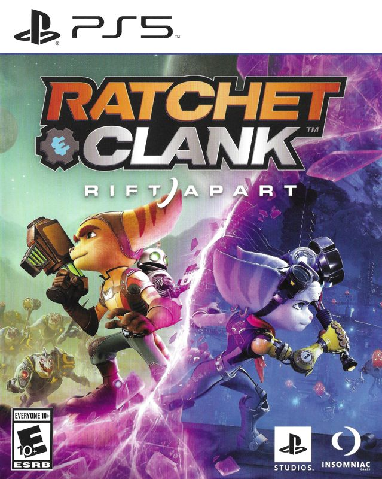

Video Game Review

Ratchet & Clank: Rift Apart
PS5
Ratchet & Clank: Rift Apart, developed by Insomniac Games and published by Sony Interactive Entertainment,
is the latest entry in the beloved Ratchet & Clank series, released exclusively for the PlayStation 5.
Building on the success of its predecessors, Rift Apart delivers a visually stunning, action-packed, and
heartfelt adventure that takes full advantage of the PlayStation 5's capabilities. In this review, I will
discuss various aspects of the game, including the story, gameplay, graphics, and sound.
Story
Rift Apart follows the interdimensional adventures of Ratchet and Clank, along with a new duo, Rivet and
Kit, as they race to stop the evil Dr. Nefarious from exploiting rifts in the fabric of reality. The game's
narrative is filled with humor, heart, and thrilling moments, providing an engaging and emotionally resonant
experience. The introduction of Rivet and Kit adds depth to the story, and the well-developed character arcs
and relationships between the protagonists make for a memorable journey.
Gameplay
Ratchet & Clank: Rift Apart features fast-paced, third-person action gameplay, with players controlling
Ratchet, Clank, Rivet, and Kit as they traverse diverse environments, battle various enemies, and solve
puzzles. The game's arsenal of creative and powerful weapons, a hallmark of the series, is as impressive as
ever, offering players numerous ways to dispatch foes and engage in frantic combat.
The game introduces new gameplay mechanics, such as the Rift Tether, which allows players to quickly
traverse the environment by pulling themselves through dimensional rifts. This mechanic not only adds a new
layer of strategy to combat and exploration but also demonstrates the power of the PlayStation 5's SSD by
enabling near-instantaneous loading between dimensions.
Rift Apart also features a series of Clank puzzle sections and Glitch combat sequences that break up the
action and provide unique challenges. These sections are well-designed and offer a change of pace from the
main gameplay, adding variety to the overall experience.
Graphics
Rift Apart showcases the graphical prowess of the PlayStation 5, with breathtaking visuals, detailed
character models, and expansive environments that bring the game's diverse worlds to life. The game's
dynamic lighting, ray tracing, and particle effects further enhance its visual appeal, making Rift Apart one
of the most visually stunning games available on the platform. The game also offers a performance mode,
enabling players to enjoy the action at a smooth 60 frames per second.
Sound
The game features an outstanding soundtrack composed by Mark Mothersbaugh, which perfectly complements the
game's interdimensional adventure. The music ranges from epic orchestral pieces to more atmospheric and
ambient tracks, providing an immersive and engaging audio experience. The voice acting is also top-notch,
with the cast delivering excellent performances that bring the characters to life and convey the game's
humor and emotion effectively.
Conclusion
Ratchet & Clank: Rift Apart is a visually stunning, action-packed, and emotionally resonant adventure that
stands as one of the best entries in the series. With its engaging story, fast-paced gameplay, diverse
arsenal of weapons, and outstanding presentation, Rift Apart offers an unforgettable experience for both
fans of the franchise and newcomers alike. As a showcase of the PlayStation 5's capabilities and a testament
to Insomniac Games' talent and creativity, Ratchet & Clank: Rift Apart is a must-play title for anyone who
owns the console.
Did you enjoy my review of this video game? Check out one of my favorite game reviews below or see a
list of my reviews!
More importantly, I'm always looking for new music to enjoy. Let
me know what you're currently listening to!
My Favorites
Read why these albums are my all-time favorites!